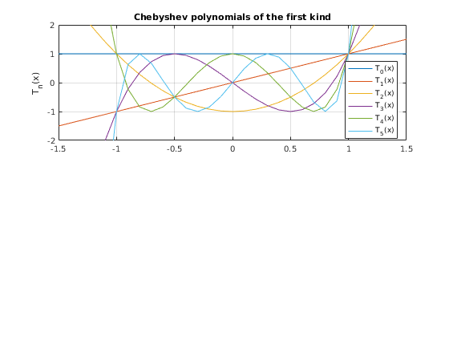
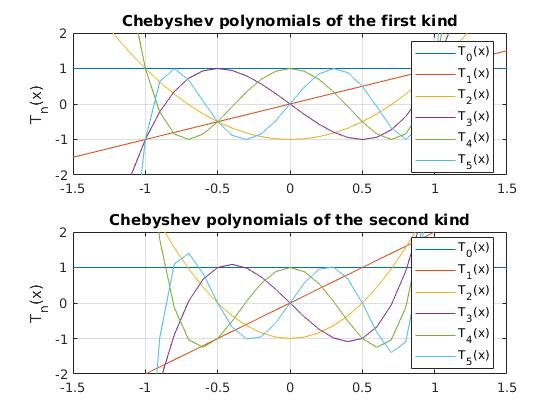

An Introduction to Chebyshev polynomials and Smolyak grids.
This is an 'interactive' introduction to learn about Chebyshev polynomials and Smolyak Grids. It aims to both teach the concepts, and give an idea how to code them in practice.
To use you will need to also download: https://au.mathworks.com/matlabcentral/fileexchange/50963-smolyak-anisotropic-grid and add it to the Matlab path (or just put them in your active folder).
Proceeds as follows. First: look at some graphs of Chebyshev polynomials (just to have seen what they look like) Second: introduce the idea of curve-fitting. Do this first with standard polynomials as it is likely more intuitive, then with Chebyshev polynomials. Third: how can we do this in higher dimensions? look at inner-product, then discuss limitations of this and how Smolyak grids help us.
Contents
- 1. Chebyshev polynomials of the first kind are defined as Tn(x) = cos(n*arccos(x)).
- Plot first five Chebyshev polynomials of the first kind
- Chebyshev polynomials of the second kind are defined as follows: U(n,x)=sin((n+1)*a*cos(x))/sin(a*cos(x))
- Plot first five Chebyshev polynomials of the second kind
- 2. Say we have some points and we want to fit a curve to them.
- Fitting Chebyshev polynomials when the domain is [a,b] rather than [-1,1]
- Higher dimensions
- Lets create a two dimensional example based on just basic Tensor product.
- Now a two dimensional example using the smolyak grid with chebyshev polynomials.
- A bit of related Theory explaining Smolyak grids and sparse grids in general.
- How should we do integrals when our functions are in Smolyak-Chebyshev form?
- Anisotropic grids.
1. Chebyshev polynomials of the first kind are defined as Tn(x) = cos(n*arccos(x)).
Can also define them by a recursive formula which makes computing them much faster.
chebyshevT(n,x) represents the nth degree Chebyshev polynomial of the first kind at the point x
Matlab has built in commands for Chebyshev polynomials. We will start with these just to see what Chebyshev polynomials but later switch to the codes of Judd, Maliar, Maliar & Valero (2014).
chebyshevT(3,0) % the values of the 0th to 4th order polynomials evaluated at 0 chebyshevT([0,1,2,3,4],0) % the values of the 3rd order polynomial evaluated at 0,1,2,3 chebyshevT(3,[0,1,2,3])
ans =
0
ans =
1 0 -1 0 1
ans =
0 1 26 99
Plot first five Chebyshev polynomials of the first kind
polyorders=5; xvalues=-1.5:0.1:1.5; figure(1) subplot(2,1,1); plot(xvalues, chebyshevT(0,xvalues)) hold on for ii=1:polyorders subplot(2,1,1); plot(xvalues,chebyshevT(ii,xvalues)) end hold off axis([-1.5 1.5 -2 2]) grid on ylabel('T_n(x)') legend('T_0(x)', 'T_1(x)', 'T_2(x)', 'T_3(x)', 'T_4(x)', 'T_5(x)', 'Location', 'Best') title('Chebyshev polynomials of the first kind')
Chebyshev polynomials of the second kind are defined as follows: U(n,x)=sin((n+1)*a*cos(x))/sin(a*cos(x))
chebyshevU(n,x) represents the nth degree Chebyshev polynomial of the second kind at the point x
chebyshevU(3,0) % the values of the 0th to 4th order polynomials evaluated at 0 chebyshevU([0,1,2,3,4],0) % the values of the 3rd order polynomial evaluated at 0,1,2,3 chebyshevU(3,[0,1,2,3])
ans =
0
ans =
1 0 -1 0 1
ans =
0 4 56 204
Plot first five Chebyshev polynomials of the second kind
polyorders=5; xvalues=-1.5:0.1:1.5; subplot(2,1,2); plot(xvalues, chebyshevU(0,xvalues)) hold on for ii=1:polyorders subplot(2,1,2); plot(xvalues,chebyshevU(ii,xvalues)) end hold off axis([-1.5 1.5 -2 2]) grid on ylabel('T_n(x)') legend('T_0(x)', 'T_1(x)', 'T_2(x)', 'T_3(x)', 'T_4(x)', 'T_5(x)', 'Location', 'Best') title('Chebyshev polynomials of the second kind')
2. Say we have some points and we want to fit a curve to them.
figure (2) % Specifically, let's take the example of exp(x) on the domain [-1,1] xgrid=-1:0.1:1; xgrid=xgrid'; ygrid=exp(xgrid); % We could fit a polynomial of order m. m=5; fittedpolynomialcoeffs = polyfit(xgrid,ygrid,m); % [Normally not such a good choice in practice (for computational reasons), it is just a more % intuitive example of the concept that we will see with Chebyshev polynomials.] % Take a look at the fit % Evaluate the fitted polynomial on our xgrid ygrid_fittedpolynomial=polyval(fittedpolynomialcoeffs,-1:0.1:1); % Now graph subplot(2,1,1); plot(xgrid,ygrid,'*',-1:0.1:1,ygrid_fittedpolynomial,'-') title('Fitted polynomial') legend('Original function', 'Fitted polynomial approximation') % Another alternative, we know that any polynomial of order m can be % represented as a weighted sum of chebyshev polynomials (of first kind) of % order m. % [https://en.wikipedia.org/wiki/Chebyshev_polynomials#Polynomial_in_Chebyshev_form] % So lets fit a chebyshev polynomial of order m instead (unfortunately % matlab does not yet have inbuilt function for fitting chebyshev polynomials) % Implementation follows: https://stackoverflow.com/questions/11993722/need-to-fit-polynomial-using-chebyshev-polynomial-basis % Fit the chebyshev polynomial of order m numdatapoints=length(xgrid); A(:,1) = ones(numdatapoints,1); if m > 1 A(:,2) = xgrid; end if m > 2 for k = 3:m+1 A(:,k) = 2*xgrid.*A(:,k-1) - A(:,k-2); %% recurrence relation end end fittedchebyshevcoeffs = A \ ygrid; % Take a look at the fit % Evaluate the fitted chebyshev polynomial on our xgrid % Follows: [ https://people.sc.fsu.edu/~jburkardt/m_src/chebyshev_polynomial/t_project_value.m ] b1 = zeros(numdatapoints,1); b0 = zeros(numdatapoints,1); for jj=m:-1:0 b2=b1; b1=b0; b0=fittedchebyshevcoeffs(jj+1)+2*xgrid.*b1-b2; end ygrid_fittedchebyshev= 0.5*(fittedchebyshevcoeffs(1)+b0-b2); % Now graph subplot(2,1,2); plot(xgrid,ygrid,'*',-1:0.1:1,ygrid_fittedchebyshev,'-') title('Fitted Chebyshev polynomial') legend('Original function', 'Fitted chebyshev approximation') % % Side note: in cases such as this example where the actual function exp(x) % to be evaluated is known we shouldn't just be using our arbitrary xgrid % to fit the chebyshev polynomial, we can use a better xgrid, or at least a % faster implementation. % See implementation in: https://people.sc.fsu.edu/~jburkardt/m_src/chebyshev/chebyshev_coefficients.m % % Why would we want to approximate the function using chebyshev polynomials % rather than just normal polynomials? Both polynomials and chebyshev polynomials % form a complete basis for the set of infinitely continuously differentiable % functions on the real line (or more precisely in the case of the chebyshev % polynomials on the interval [0,1], as this is where they are typically defined, % but we can always transform the real line to [0,1] and vice-versa anyway.) % From the perspective of numerical computation Chebyshev polynomials have % the advantage of being an orthogonal basis (while normal polynomials are % not) which means that the algebra tends to be simpler and so the % computation can be done faster. Computation with orthogonal bases also % tends to be more stable. % More on nice properties of Chebyshev polynomials in terms of % Approximation Theory: https://en.wikipedia.org/wiki/Approximation_theory % % If for some reason you ever wanted to swich from Chebyshev polynomials % into just a standard polynomials you could easily calculate the % coefficients. See pg 197 of % https://www2.units.it/ipl/students_area/imm2/files/Numerical_Recipes.pdf % But in practice you are unlikely to ever want to do so. % % Remark: As well as standard polynomials, other choices include % polynomials in logs, and Hermite polynomials (the later are orthogonal % with respect to normally distributed shocks). Since none of these are % orthogonal you cannot just fit them as a matrix operation like we did % here, instead you have to use some kind of distance metric, like % OLS for standard polynomials, or non-linear least squares for % polynomials. These other types of polynomials are quite common in % Economics when performing Parametrized Expectations Approach.

Fitting Chebyshev polynomials when the domain is [a,b] rather than [-1,1]
What about if your data are not originally on the interval, [-1,1]? Then just add an initial step to get your data from their existing interval [a,b] onto the interval [-1,1]. zgrid = ((xgrid-min(xgrid))-(max(xgrid)-xgrid))/(max(xgrid)-min(xgrid)); Then just do all the same as above using zgrid and ygrid.
figure(3) clear A % just need to clean this out as otherwise the A created above would cause an error xgrid=linspace(0,3,21)'; % Turn up the interval to [0,10] or [0,100] and 5th order Chebyshev will start to struggle to approximate. ygrid=exp(xgrid); % xgrid=-1:0.1:1; xgrid=xgrid'; % ygrid=exp(xgrid); numdatapoints=length(xgrid); % Create zgrid by moving xgrid from [a,b] onto [-1,1] a=min(xgrid); b=max(xgrid); zgrid = (2*xgrid-a-b)/(b-a); % Fit chebyshev polynomial of order m A(:,1) = ones(numdatapoints,1); if m > 1 A(:,2) = zgrid; end if m > 2 for k = 3:m+1 A(:,k) = 2*zgrid.*A(:,k-1) - A(:,k-2); %% recurrence relation end end fittedchebyshevcoeffs = A \ ygrid; % Note: other than adding zgrid line this is unchanged (A depends on zgrid % instead of xgrid, but this is largely irrelevant). % Evaluate the fitted chebyshev polynomial on our zgrid b1 = zeros(numdatapoints,1); b0 = zeros(numdatapoints,1); for jj=m:-1:0 b2=b1; b1=b0; b0=fittedchebyshevcoeffs(jj+1)+2*zgrid.*b1-b2; % only change is now uses zgrid end ygrid_fittedchebyshev= 0.5*(fittedchebyshevcoeffs(1)+b0-b2); % Now graph to take a look at the fit plot(xgrid,ygrid,'*',xgrid,ygrid_fittedchebyshev,'-') title('Fitted Chebyshev on interval [a,b]') legend('Original function', 'Fitted chebyshev approximation') % % When people talk about 'hypercubes' they are talking about this trick of % switching problems from [a,b] to [-1,1] and solving there, then switching % back. It has the advantage that all your codes written to solve models % can just work with the [-1,1] hypercube (or more accurately, the obvious % extension of this to [-1,1]^d in higher dimensions, where d is number of dimensions).

Higher dimensions
Until now the function to be approximated as just one-dimensional. What about higher dimensional functions?
One basic approach would just be to use the tensor-product of Chebyshev polynomials. This can work fine, but only for a few dimensions. After that the curse of dimensionality kicks in too hard. [eg. say we want a 5th order chebyshev polynomial in each dimension. Then for four dimensions we will have 5^4=625 coefficients, and for 10 dimensions we would have 9765625=5^10 coefficients.]
We can use 'other products' of chebyshev polynomials to reduce the number of coefficients required. Smolyak grids are one approach to doing this. Smolyak grids have a 'level of approximation' parameter, mu, that determines how many grid points (and hence coefficients) will be required. [eg. for the two dimensional case, Smolyak grid has 1,5, and 13 points for mu=0,1,2 respectively. The tensor product of 5 points in each dimension would involve 25=5^2 points.]
It turns out that we can combine the Smolyak grid concept of how to create higher dimensional grids with the Chebyshev polynomial approximation for a single dimension (loosely, a 5th order Chebyshev polynomial can be thought of as 5 grid points used to approximate a single dimensional function)
While the concept is simple enough the algebra is hard and the final formulae are convoluted. Judd, Maliar, Maliar & Valero (2014) provide the formulae.
Lets create a two dimensional example based on just basic Tensor product.
http://ice.uchicago.edu/2011_presentations/Judd/Approximation_ICE11.pdf (pg 22 of 25) NOT IMPLEMENTED SAVING figure(5) FOR THIS
Formula for coeffs is also on bottom of 2nd page of http://icaci.org/files/documents/ICC_proceedings/ICC2009/html/nonref/10_3.pdf
Now a two dimensional example using the smolyak grid with chebyshev polynomials.
Rather than just using tensor product of the 1D chebyshev polynomials. Use JMMV (2014) codes: https://au.mathworks.com/matlabcentral/fileexchange/50963-smolyak-anisotropic-grid An anisotropic grid is used, meaning that the 'level of approximation' for the Smolyak grid can be set differently for different dimensions.
% 1. Smolyak anisotropic method for 2 dimensions; % ----------------------------------------------- vector_mus_dimensions = [5,5]; % Introduce the level of approximation in every dimension from 1 to 10; see Section 4 of JMMV (2014) d=length(vector_mus_dimensions); % Number of dimensions mu_max = max(vector_mus_dimensions); % Compute the maximum level of approximation across all dimensions Smolyak_elem_iso = Smolyak_Elem_Isotrop(d,mu_max); % Construct the matrix of indices of multidimesional Smolyak elements (grid points and polynomial basis functions) that satisfy the usual % isotropic Smolyak rule for the approximation level equal to "mu_max" Smol_elem_ani = Smolyak_Elem_Anisotrop(Smolyak_elem_iso,vector_mus_dimensions); % Select from the matrix of isotropic indices "Smol elem_iso" a subset of indices that correspond to the given anisotropic "vector_mus_dimensions" Smol_grid_ani = Smolyak_Grid(d,mu_max,Smol_elem_ani); % Construct the Smolyak grid for the given subindices of anisotropic Smolyak elements "Smol_elem_ani" Smol_polynom = Smolyak_Polynomial(Smol_grid_ani,d,mu_max,Smol_elem_ani); % Matrix of the polynomial basis functions evaluated in the grid points if d==2 figure(6) scatter(Smol_grid_ani(:,1),Smol_grid_ani(:,2),'filled'),title('Smolyak grid') % Enable it to draw the Smolyak grid end % 2. Interpolation of a function y=2*x1 .*exp(-4*x1.^2-16*x2.^2); % --------------------------------------------------------------- y_Smolyak = 2*Smol_grid_ani(:,1) .* exp(-4*Smol_grid_ani(:,1).^2 - 16*Smol_grid_ani(:,2).^2); % Evaluate the function on the Smolyak grid b = Smol_polynom\y_Smolyak; % Compute the coefficients of Smolyak interpolating polynomial size(b) % Take a look to see how many coefficients this involves % 3. Compare the true and interpolated functions on a dense grid % --------------------------------------------------------------- [x1,x2] = meshgrid(-1:0.05:1, -1:0.1:1); % Create a uniformly spaced grid of 41 points on [-1,1]x[-1,1] y_true = 2*x1.* exp(-4*x1.^2 - 16*x2.^2); % Evaluate the true function on the grid figure(7) subplot(1,2,1), surf(x1,x2,y_true),title('True function') % Plot the true function for j=1:size(x1(1,:),2) y_fitted(:,j) = Smolyak_Polynomial([x1(:,j),x2(:,j)],d,mu_max,Smol_elem_ani)*b; % Evaluate Smolyak interpolating polynomial on the grid end subplot(1,2,2), surf(x1,x2,y_fitted),title('Smolyak interpolation') % Plot Smolyak interpolation % % Note: the commands being called here to do the Smolyak anisotropic grids % based on chebyshev polynomials are not limited to the two dimensions that % we use here. They work for any number 'd' of dimensions. %
ans = 145 1


A bit of related Theory explaining Smolyak grids and sparse grids in general.
http://web.stanford.edu/~paulcon/slides/Oxford_2012.pdf
How should we do integrals when our functions are in Smolyak-Chebyshev form?
Welcome to the bleeding edge of numerical computation. Quite simply this is a hard problem and one to which we do not yet know the answer.
One obvious answer would just be to evaluate the entire function on a non-sparse grid and then just take the integral there using standard quadrature (or monte-carlo) integration methods. While easy to code it does of course defeat the entire point of using a sparse grid in the first place.
Current approaches include: Gauss-Hermite quadrature: JMM2011 (and JMMV2014) use Guass-Hermite quadrature to take integrals with respect to shocks. Problem is that it only really works if the shocks are independent. Monomials: JMM2011. This is essentially about applying the sparse grids idea to the quadrature approach. Just do quadrature at some points on a sparse grid rather than all the points on a 'product grid'.
Monte-Carlo integration methods do not appear to perform as well as the above mentioned (according to JMM2011).
% JMM2011: Numerically stable and accurate stochastic simulation approaches for solving dynamic economic models % JMMV2014: Smolyak method for solving dynamic economic models: Lagrange interpolation, anisotropic grid and adaptive domain
Anisotropic grids.
The codes of JMMV2014 allow for the grids to be anisotropic, meaning that the degree of the Chebyshev polynomials can be different in each dimension. Conceptually this is an easy idea to get your head around, but the actual implementation/algebra is tricky.